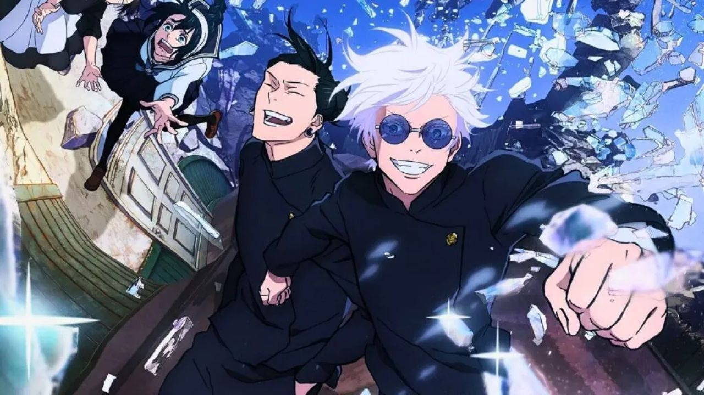

Trailer
Shibuya Incident Trailer
Quick story
Jujutsu Kaisen Season 2 delves deeper into the past of sorcerers like Satoru Gojo and Suguru Geto, showcasing their younger years and the events that shaped them. The season also covers the Shibuya Incident arc, where Yuji Itadori and his allies face new and terrifying challenges. With powerful curses, intense battles, and deep character development, Season 2 explores the origins of major conflicts while advancing the overarching narrative of the Jujutsu Kaisen universe.